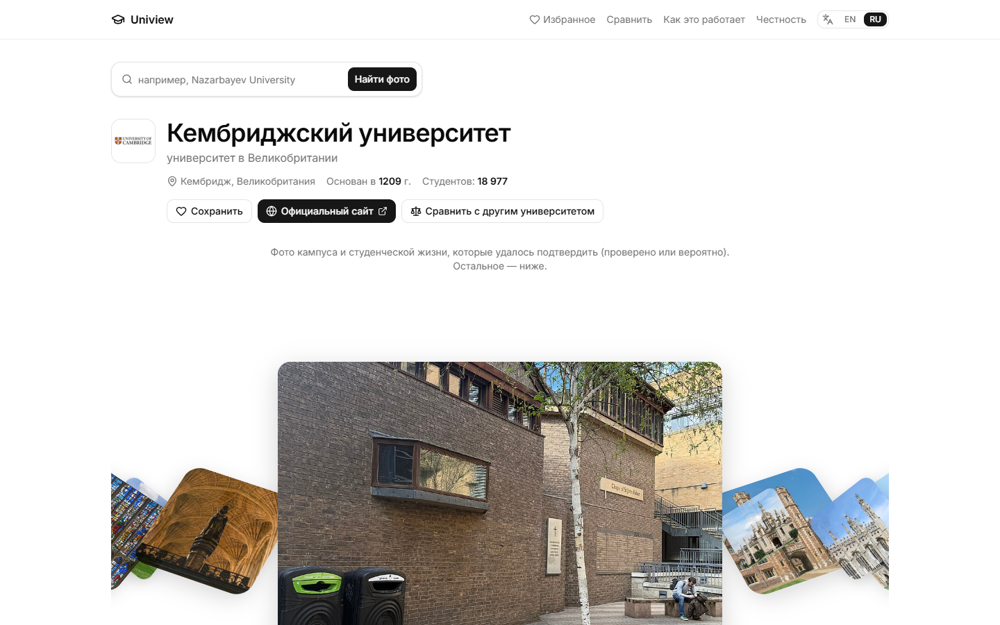
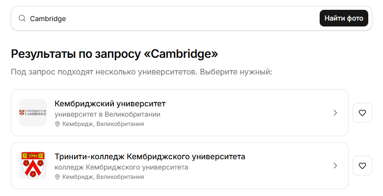
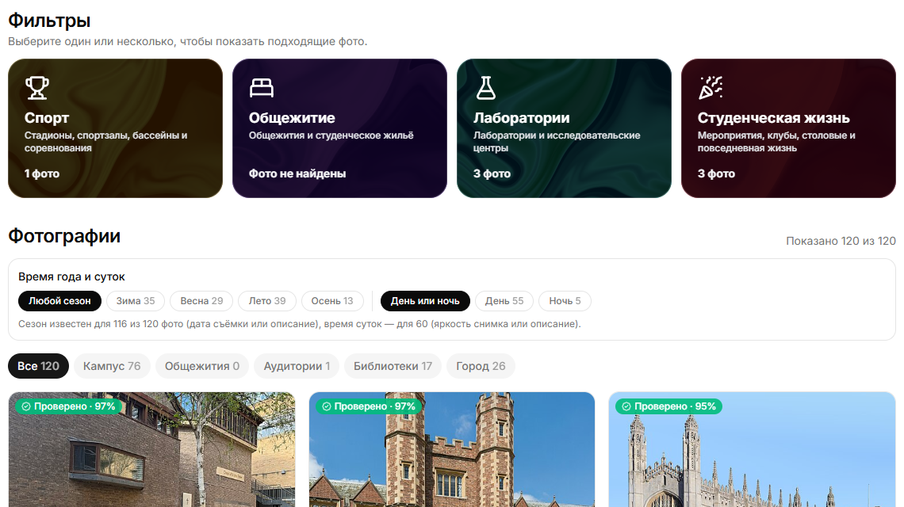
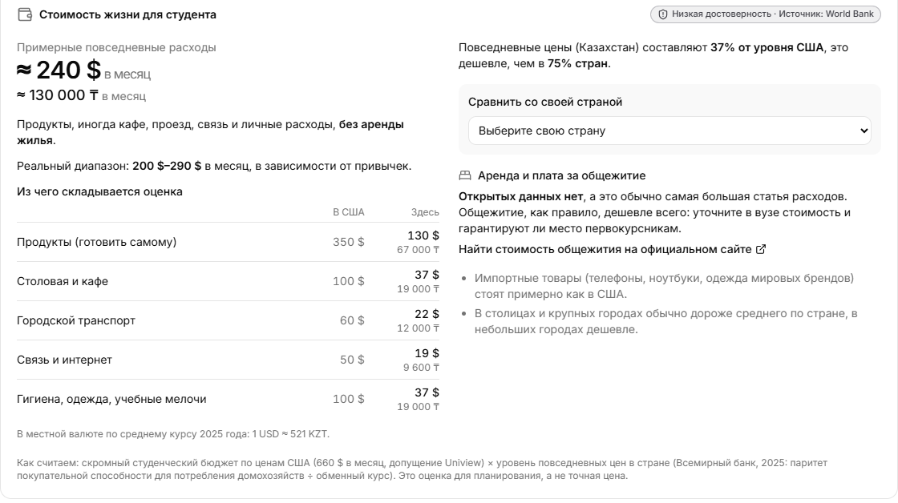
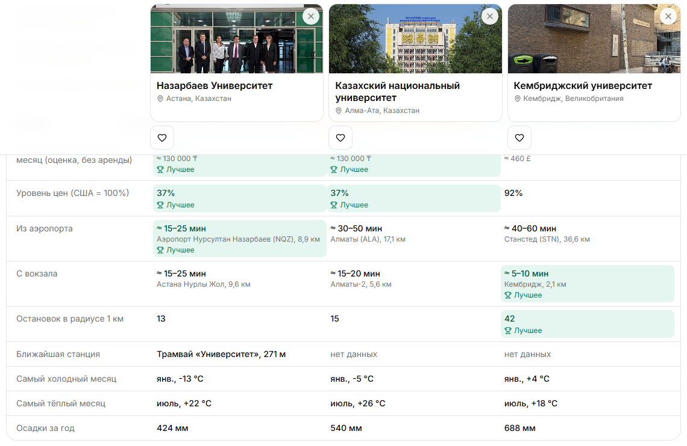

Визуальный профиль университета за 30 секунд
Абитуриент вводит название вуза и получает реальные проверенные фото кампуса, общежитий, аудиторий, библиотек и города. У каждого фото есть источник, дата и степень уверенности.
Сайт: https://<ваш-проект>.vercel.app

Вуз в другом городе или стране. Поездка дорогая, а решение нужно принять до дедлайнов приёма.
На сайте вуза — рекламные кадры. В поиске картинок перемешаны чужие здания, логотипы, стоковые фото и дубликаты, без источника и даты.
Никто не говорит, какие фото подтверждены, а какие случайные. Не видно, где общежитие, как добраться и сколько стоит жизнь.
Что нужно абитуриенту: за минуту честно понять, как выглядит кампус, общежития, аудитории и город, откуда каждое фото и что о вузе неизвестно.


Фильтры и фото. Уверенность на каждой карточке, сезон и время суток, «недостаточно данных» там, где фото нет.

Жизнь в городе. Бюджет студента в месяц в местной валюте, сравнение со своей страной, путь из аэропорта.

Сравнение 2–4 вузов. Режим «только различия», подсветка лучших значений.
Тестовый сценарий: «Cambridge» → выбор из списка → профиль мгновенно (демо). Новый вуз, например «Томский государственный университет», собирается вживую за 12–18 с: из 146 найденных фото 11 нерелевантных удалено, показано 120, из них 35 проверенных.
| Источник: фото вуза в Wikidata / категория вуза / геопоиск / текстовый поиск | 0,75 / 0,6 / 0,3 / 0,15 |
| Геотег ≤ 0,5 км от кампуса · дальше 15 км | +0,3 · −0,4 |
| Вуз упомянут в названии или описании | +0,15 |
| ≥ 0,75 проверено · ≥ 0,5 вероятно · < 0,25 удалено | объяснение у каждого |
SHA-1 для точных копий + перцептивный хеш dHash (64 бит) для пережатых и обрезанных копий.
Взвешенные признаки: название и категории Commons по 2 балла, описание 1 балл, порог 2. Отсекаются логотипы, схемы, портреты, микроскопия.
Статус и уверенность у каждого фото и факта. «Нет данных (источник не ответил)» вместо выдумки.
У каждой оценки есть кнопка «Почему такая оценка?»: источник, геотег, упоминание вуза.
Новый вуз — 12–18 с, из кеша — меньше 0,3 с. На экране прогресс по 5 шагам.
Только открытые источники без ключей. Лицензия и автор у каждого фото.
Бюджет в местной валюте, путь из аэропорта, общежития рядом, сравнение 2–4 вузов, трекер подачи документов.
Без аккаунтов: избранное хранится в браузере, а ссылка для семьи несёт список в самой ссылке, а не на сервере.
| Участник | Роль | Что сделал |
|---|---|---|
| Имя Фамилия | роль | вклад |
| Имя Фамилия | роль | вклад |
| Имя Фамилия | роль | вклад |
Инструменты: при разработке использовался AI-ассистент Claude Code (Anthropic) — для кода, аудита качества классификации и документации.
Проверка без компьютерного зрения. Покрытие зависит от Wikimedia Commons. Стоимость жизни — оценка по стране. Нет открытых данных об аренде и проходных баллах: их вводит сам абитуриент.
Попробуйте: https://<ваш-проект>.vercel.app